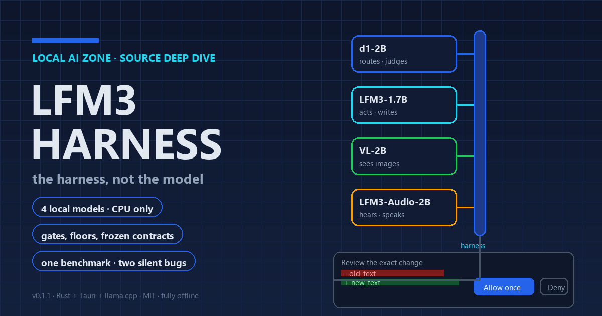

A free, community-built desktop coworker that runs four Liquid AI models, the biggest around 2B parameters, entirely on your CPU. The interesting part is not the models — it is the Rust harness that refuses to let them lie, wander, or finish early. Here is a source-level tour of every rail, gate and floor, with the benchmark numbers the project itself published.
Executive Summary
- What it is: LFM3-Harness is a free, MIT-licensed desktop app (Windows 10/11 x64, Linux x64) that runs Liquid AI's LFM3 models locally through llama.cpp on CPU. You pick a folder, chat your way through work, and every proposed file change appears as an exact diff that you must explicitly allow. It is an independent community project — not affiliated with, endorsed by, or sponsored by Liquid AI.
- The bet: four small models — d1-2B as router, LFM3-1.7B as the acting writer, LFM3-VL-2B for images, LFM3-Audio-2B for hearing and speaking — none of which should be trusted to be right. The trust lives in the harness instead: confidence floors, preflight gates, path confinement, approvals that expire, and completion claims that are refused until the deliverable exists on disk.
- The machinery, in numbers: a write gate that holds a change the decision model confidently contradicts at a 75% floor — showing no approval card at all while it holds, and only advising when the judgement is merely uncertain; an advisory evidence gate at 65%; a 55% router-confidence floor with a keyword fallback that a low-confidence model answer can never override; a hard 10-minute (600 s) approval TTL; 12 tool rounds per chat turn maximum; and frozen, SHA-256-hashed acceptance contracts for verified tasks that cannot be weakened during retries.
- The benchmark story: the project's own 2026-10-31 multimodel run scored 21/21 on routing with a 122 ms median route decision — and exposed two genuine bugs, including that the fancy decision-model router had been silently falling back to keywords for every request because it was calling an endpoint the native model answers with HTTP 501.
- Honest limits: the 50-job agent benchmark passes 43/50 with two false passes; three semantic missions stay human-review-only because the automatic-pass holdout was never run; every number comes from one machine and one run; and the README keeps a public "Known gaps" list that this post quotes rather than papers over.
- What this review is and is not: this post is an introduction to how the thing is built, not a confirmation that it works well. A 1.7B writer produces 1.7B-grade prose; the harness mostly succeeds at preventing it from doing damage, which is a different and lower claim than being useful at everything a frontier model does.
Contents
- Why the Harness Is the Product
- What the App Actually Is
- Architecture: One Executable, Four Subprocesses, Three Databases
- Routing: A Decision Model With Veto-Limited Influence
- The Trust Machinery: Write Gates, Evidence Gates, Diff Approvals
- Refusing to Let the Model Declare Victory
- Benchmark Forensics: A Test Suite That Caught Two Silent Bugs
- The Python→Rust Rewrite, and How It Is Enforced
- Design Lessons for Constrained Agents
- Limitations and Open Questions
- Conclusion
- References
Verification note: what is quoted, what is measured
- Code behaviour and limits are quoted from the LFM3-Harness source and README at v0.1.1 — confidence floors, timeouts, round caps, acceptance contracts and process supervision — with file paths given so each claim can be checked.
- Packaging facts — installer size, bundle formats, artifact byte counts and SHA-256 hashes — come from the project site and the repository's release notes.
- Model facts — parameter counts, context windows, licences and weight sizes — come from Liquid AI's model cards and launch post. LFM3-Harness is an independent community project, not affiliated with Liquid AI.
- Benchmark numbers are the project's own measurements on one machine in one run (multimodel, 2026-10-31; the 50-job agent suite), not independently replicated here, and are reported with the project's caveats attached.
- This post is a source-level review: the desktop interface was not exercised for it, no benchmark was re-run, and no figure here is a hands-on measurement by Local AI Zone.
1. Why the Harness Is the Product
Almost every local-AI post on this site is about a model: parameters, quantization, benchmark tables. This one is about the system around four models that, by any honest measure, are not very smart. The biggest writer in the stack has 1.7B parameters. There is no GPU involved. Nothing is in the cloud.
The premise of LFM3-Harness is that a small local model plus a loose harness equals confident nonsense — an assistant that hallucinates file paths, overwrites the wrong document, and announces success when the output does not exist. The fix is not a bigger model. It is rails: a piece of software that never lets the model's self-report count as evidence.
That premise shows up in one line of Rust that I think is the most honest sentence written about agents this year, from crates/lfm3-harness/src/agent/loop_agent.rs:
"finish refused: {path} does not exist or is empty; keep working"When the acting model decides it is done and calls finish, the harness checks the filesystem. If the promised deliverable is not there, the claim is rejected and the loop keeps going. Everything else in this post is the same idea, applied one layer down.
One piece of candor before the tour, because it shapes how to read every number below: this is not a capable general assistant. It will not refactor your codebase, hold a long research thread, or match anything you have used from a frontier model. The writer is a 1.7B model running on a laptop CPU, and its output quality is what a 1.7B model on a laptop CPU produces. What the project attempts is narrower: make such a model safe enough to touch real files, and document — publicly, in its own README — where even that fails. This post introduces the machinery and reports the measurements. It does not certify the result.
2. What the App Actually Is
Pick a folder, then chat. The assistant can list, read, search, and find related files inside that folder, and it can draft reports or edits — but it asks before it writes anything, showing the exact diff and waiting for an explicit "Allow once." There is no shell tool, no browsing, and no path outside the chosen folder. The project site's tagline is the whole pitch: No account. No cloud. No telemetry out of the box.
Work happens in two modes. Free-form chat is conversational and still gated. Verified tasks are stricter: the mission ships with a frozen acceptance contract, and only the deterministic checks in that contract — never the model's say-so — decide whether the task passed.
The model split is a deliberate division of labour, one small specialist per sense:
| Role | Model | Job | Weights |
|---|---|---|---|
| Router / judge | d1-2B ("decision") | Classify each message into a task shape; preflight-check proposed writes; adjudicate semantic checks | 1.10 GB |
| Actor | LFM3-1.7B (text) | Plans, calls folder tools, writes the report or edit | 1.10 GB |
| Vision | LFM3-VL-2B | Looks at PNG/JPEG/WebP/GIF and reports measured facts | 1.25 GB |
| Voice | LFM3-Audio-2B | Transcribes dictation and audio files; speaks replies via llama-tts | 1.40 GB |
Four models, ≈4.9 GB of weights total, downloaded separately inside the app (~15 MB installer). Key facts from the project site and README, v0.1.1.
Everything below is verified against the source tree on main (16 commits at time of writing); file paths are given so you can check each claim yourself.
3. Architecture: One Executable, Four Subprocesses, Three Databases
The README's architecture section is direct about what it is not:
"The shell embeds the harness engine in-process: there is no sidecar, no loopback engine server, and no shell command surface." — README.md, §Architecture
So: a React/TypeScript webview inside a Tauri 2 shell, talking to an embedded Rust engine (crates/lfm3-harness) only through typed commands in apps/desktop/src-tauri/src/commands.rs and durable event channels (lfm3:run-event, lfm3:job-event, lfm3:chat-event). No Python sidecar, no local HTTP server that anything else on the machine could talk to. The one thing the engine does spawn is four llama.cpp children:
| Server child | Endpoint (pinned) | Context | Sampling |
|---|---|---|---|
| text / actor | 127.0.0.1:8080 | 32,000 tokens | temp 0.1, top-k 50, repetition penalty 1.1 |
| vision (VL-2B) | 127.0.0.1:8081 | 8,192 tokens | greedy |
| audio (Audio-2B) | 127.0.0.1:8082 | 8,192 tokens | greedy |
| d1 (decision) | 127.0.0.1:8083 | 8,192 (batch 8,192) | greedy; native choice protocol |
Ports and defaults in crates/lfm3-harness/src/config.rs; launch arguments built in apps/desktop/src-tauri/src/engine.rs; per-role sampling in crates/lfm3-harness/src/agent/profile.rs. The 32k window is not arbitrary — LFM3 family members are trained for 32k context.
Three details are worth noting, because they are the parts that keep the topology honest rather than decorative:
The children cannot be talked into anything. The launch arguments are built in one place, as the doc comment on crates/lfm3-harness/src/model/process.rs says: "Builds the fixed command line; no planner-provided text is accepted." A model that hallucinates a clever flag has nowhere to put it. Readiness is confirmed by polling each server's identity endpoint, and an IdentityMismatch is a hard fail rather than a warning — the wrong weight on a port stops the boot.
The children cannot outlive the parent. On Windows every child is assigned to a job object created with JOB_OBJECT_LIMIT_KILL_ON_JOB_CLOSE (crates/lfm3-harness/src/supervisor/windows.rs) — the processes are created suspended, joined to the job, then resumed. On Linux each child gets its own process group. Kill the app and nothing keeps chewing your RAM at 100% CPU. This sounds trivial; anyone who has orphaned a llama-server knows it is not.
The loopback pin is enforced at packaging time. Config::validate_local rejects any non-loopback URL under the Packaged profile, and the packaged build forbids user-supplied download switches and external-server reuse. The offline claim is a property of the shipped binary, not a privacy policy.
State is split across three separate SQLite files, and the comment on crates/lfm3-harness/src/chat/store.rs explains why: "a conversation is not a verified run." The mission journal (append-only, user_version-keyed migrations, WAL mode) records runs, steps, attempts, tool results, check results, events, and artifacts keyed by sha256 UNIQUE; chat history and its approvals live in a separate chat.db; jobs in jobs.db. A chatty mistake can never pollute the evidence trail of a verified task, and a verified task's journal stays replayable.
4. Routing: A Decision Model With Veto-Limited Influence
Every chat message gets classified into one of seven intents — general, explore, summarize, related, report, vision, voice — and the route decides which capabilities get hinted to the actor. The classifier is d1-2B, consulted through a native choice protocol rather than free text:
- Messages shorter than 24 characters skip the model entirely — they are greetings, not work. (A comment in
chat/router.rsnotes that keywords are a poor judge of intent when no group fires, so genuinely tiny utterances are the only case the heuristic keeps unchallenged.) - The request evidence is clipped to 8,000 characters, "well inside the range where d1 stays accurate."
- A decision counts only at ≥55% confidence:
MIN_DECISION_CONFIDENCE_BPS = 5_500inchat/router.rs. Below the floor, an undeclared label, or a d1 outage, the keyword route stands. - A confident
generalanswer never overrides keywords — the code literally requiresintent != ChatIntent::General. "This is just conversation" is not treated as a routing opinion.
The protocol itself is where the design gets specific. d1 answers POST /v1/systemone with a typed choice and a probability, and the client enforces type == "choice", a declared label, and a confidence in [0,1]. If you ask a native decision model for ordinary chat, it answers HTTP 501 — which, as we will see in §7, is exactly how a benchmark caught the router pretending to work.
And the invariant that ties the section together: a route grants capability hints, never authority. Being classified as "report" tells the actor which tools might help. It does not let anything write a file.
5. The Trust Machinery: Write Gates, Evidence Gates, Diff Approvals
Three independent layers stand between "the actor wants to change a file" and "the file changed." None of them can approve or execute anything on their own — they can only advise, hold, or refuse.
Layer one: the filesystem itself. Every model-supplied path is resolved through crates/lfm3-harness/src/paths.rs, whose header comment reads:
"Parent components, absolute paths, reserved device names, link and reparse-point traversal, and canonical escapes are rejected before any caller can touch the filesystem."
Symlinks are checked component by component; on Windows, trailing dots, trailing spaces and device names like CON and COM1 are rejected too. The release acceptance suite includes an escape fixture asking the mission to write ../escaped.md — the request is rejected before planning, in 0.25 s, with no leftover processes.
Layer two: the preflight gates. A second model — d1, not the actor grading its own homework — reviews each proposal. The constants, from chat/decisions.rs:
| Gate | Floor | Labels | Outcomes | Powers |
|---|---|---|---|---|
| Write gate | WRITE_GATE_FLOOR_BPS = 7_500 (75%) | aligned / uncertain / contradicts | Allow / Advise / Hold | A Hold suppresses the approval card entirely; the change is not written and not retryable |
| Evidence gate | EVIDENCE_GATE_FLOOR_BPS = 6_500 (65%) | sufficient / insufficient / off_topic | Advisory note only | Never blocks; flags thin evidence after read-only work |
Gate decisions time out at 12 s (DECISION_TIMEOUT); evidence is capped at 7,000 chars total, with the user request at 3,000 and the file excerpt at 2,000.
The gate prompt is deliberately paranoid. It feeds d1 two clearly labelled inputs:
REQUEST (the person's words, the only authorization):
{...}
PROPOSED ACTION (model-authored, untrusted):
{...}The actor's proposal is data under review, not an instruction. When the write gate holds, what the actor sees is hold_message() — and note there is no appeal path:
"Harness preflight held the change to {target} (d1, {n}% confidence): {reason}.
No approval card was shown and nothing was written. Do not retry the same
change. Either propose a change that clearly matches the request, or answer
with what you need."Layer three: you. If a proposal survives the gates, it arrives as an approval card in the UI (apps/ui/src/chat/ActionCard.tsx): a "Review the exact change" expander with the old and new text side by side as a remove/insert diff grid, and two buttons — Allow once, Deny. There is no "allow always." Approvals expire: APPROVAL_TTL = 600 seconds in apps/desktop/src-tauri/src/chat.rs, ten minutes, batch-expired by the store. A diff you thought about for eleven minutes is a diff you must be re-asked about.
6. Refusing to Let the Model Declare Victory
Sections 4–5 gate the model's actions. The hardest problem is gating its claims, because a 1.7B model will claim success with complete sincerity and nothing to show for it. The harness treats three kinds of claim as unprovable until checked:
- "I'm done."
agent/loop_agent.rsrefusesfinishunless the required deliverable exists and is non-empty on disk — the quote that opens this post — and refuses again ("finish refused: re-read the output first") unless the actor re-reads what it just wrote. A finish backed by an empty or placeholder write is refused outright, as is overwriting a source file with the report. - "The evidence supports this." That is what the evidence gate (§5) spot-checks after read-only work — advisory, but at least a second model looked.
- "The task passed." In verified tasks, nobody gets to claim this — including the harness's models. Acceptance is a frozen spec, canonicalised and SHA-256-hashed the moment it loads, recorded in an
acceptance_specstable, and never weakened during retries or replanning. Checks are deterministic: file exists, content matches, content absent, JSON schema, numeric consistency, report complete. The mission declares its required artifact; chat's warm fuzzies cannot satisfy any check.
Semantic judgments — the cases a deterministic check cannot express — exist in the code (verify/semantic.rs: VL criteria, d1 choice and grounded checks, default confidence floor 8_000 bps, and a d1_grounded rule requiring the claimed string to occur literally in frozen input bytes before any model is consulted). But for three of the four missions — screen_qa, voice_intake, doc_extract — the acceptance spec declares "mode": "human_review_only" and the engine refuses to start them under automatic judgment. The documented bar for flipping a semantic check to automatic is at least three packaged end-to-end runs with zero confident false completions. That qualification has never been performed, and the README says so instead of quietly enabling it.
Only desk_task — frozen inputs, ten file tools, seven deterministic checks, required artifact out/summary.md, empty command templates — has passed end-to-end acceptance with real models: 5.99 s, with peak llama-server memory of 1,603,924 KB recorded, across an eight-case release suite that includes escape, crash, timeout and missing-model scenarios, all leaving no leftover process IDs.
7. Benchmark Forensics: A Test Suite That Caught Two Silent Bugs
On 2026-10-31 the project ran its multimodel benchmark — one run, one machine, results published in bench/multimodel/REPORT.md with the caveats attached. Headline numbers first:
| Suite | Result | Notes |
|---|---|---|
| Router accuracy | 21/21 | Keywords alone would have managed only 14/21; d1 was consulted 21/21 times and replaced the keyword route 20 times with zero regressions |
| Route latency | 122 ms median | Per d1 decision |
| Edge cases | 7/7 + 3/3 | Override-winners 7/7; keyword blind spots recovered by d1 3/3 |
| Chat turns | 12/12 | With tool rounds, gates consulted live |
| Vision / voice | 2/2 · 1/1 | TTS + ASR round-trip 2/2 at 0% WER (text-level) |
| Gates in the run | 2 write · 8 evidence | 0 write holds fired; one gate answer at 55% fell below the 75% floor; 2 evidence advisories; 2 gate answers rejected as inconclusive |
One real run on one local machine with a pinned llama.cpp runtime; synthetic fixtures; generated PNGs; no webview involved — the report states nothing is scripted. All caveats are the project's own.
Read the 21/21 with one caveat the report itself implies: before the bug below was fixed, the router that actually shipped was the keyword table, and the keyword table alone scores 14/21. The headline number describes the system as it was intended to work on the bench day — not a capability that had ever been running in the app.
What makes the benchmark worth reading is not what it proved but what it caught. The report was written around questions like: "Does d1 actually receive the prompt, or silently fall back?" Two genuine defects answered that question the hard way:
Bug one: the router was theater. The client was calling /v1/chat/completions on the decision model — an endpoint native d1 answers with HTTP 501. Routing had been "silently using keywords for every request." The app still felt right because the keyword table handles the obvious cases; the 21/21 number, had it been measured a week earlier, would have been 14/21 while claiming the d1 path was exercised. The fix speaks /v1/systemone and enforces the declared label, the choice type, and a [0,1] confidence — so a fallback can never masquerade as a decision again. The lesson generalises to any multi-model agent setup: instrument whose answer you actually used, not which endpoint you configured.
Bug two: approval purgatory. A chat action the user approved could stay stuck in approved forever, because the store's transition rule only accepted moves from pending. The two-transition path (approved → applied | failed, preserving decided_at) now exists, with the rationale kept as a comment in chat/store.rs — the sort of state-machine bug that a fake-model test suite misses and a real click-through finds.
The 50-job agent benchmark (bench/agent50/REPORT.md) is equally unsparing: 43/50 harness-pass (86%), 41/50 on the stricter semantic judgment, two false passes (jobs t27/t36, both from word-count bounds that said "too long" where the real failure was different), zero false failures, average 5.7 turns, median 30.5 s — and a weakest category, search, at 1/5. The report is explicit that the harness being more lenient than the semantic judge is precisely the gap you should worry about, because the harness is the thing shipping success messages.
8. The Python→Rust Rewrite, and How It Is Enforced
The harness began as a Python prototype. The README now opens with: "The Python implementation, tests, caches, and Python project configuration have been removed" — while the model weights, llama.cpp runtime, demo materials and missions carried over. PLAN.md bans Python from "development, packaging, or runtime" outright.
The part worth noticing is the enforcement. A dead stack is easy to resurrect accidentally: one old script left in the repo, one CI job invoking python, one packaged .py nobody notices. So removal is a checked assertion, not a claim. scripts/accept.ps1 runs a step literally titled "no Python project files" across the source tree; the packaged smoke test installs the NSIS build into a path containing spaces and verifies the installed tree contains no Python source; STEPS.md requires an audit expecting none. Legacy .lfm3/ data from the prototype is deliberately not migrated. There is no blog-post lesson-learned narrative in the repo — the rewrite's memory survives as gates in the pipeline, which is a more durable kind of record anyway.
9. Design Lessons for Constrained Agents
Strip away the specific models and the harness leaves a reusable checklist for anyone building on small, cheap, local models:
- Separate hints from authority. Classification, routing and proposals inform the system; only deterministic checks and human approvals change state. If a model output can trigger a side effect, you built the trust wrong.
- Cap everything, and say so when a cap fires. 12 tool rounds per turn, 8 plan steps, 3 attempts per strategy, 64 turns per job, 900 s run timeout, 32,000-character inputs, 240 messages of history. When the round cap hits, the app tells the user ("I stopped after 12 tool rounds to keep this turn bounded") instead of failing silently.
- Give each role the sampling it needs. The actor gets temperature 0.1/top-k 50/repetition penalty 1.1; the judges get greedy decoding — you want a reviewer to be deterministic. Chat runs warmer (0.3) than the working loop. TTS gets 1.0/top-k 128 with a 120 s watchdog.
- Fail closed by default. Loopback-only pins enforced in the packaged binary;
allow_downloadforbidden after packaging; children killed by job object if the parent dies; interrupted jobs reported asinterrupted, never silently resumed; a second message during an active turn is rejected rather than queued. - Make claims cost something. "Done" requires a file on disk. "Passed" requires a frozen contract. "I looked at the image" requires re-read evidence. The harness's whole personality is: show me, don't tell me.
- Publish your gaps. The README's Known-gaps list and the benchmark caveats do more for the project's credibility than any 21/21 headline could.
10. Limitations and Open Questions
V0.1.1 is honest about being experimental — in its own words, per the README's "Known gaps" and product-constraints sections:
| Limitation | Status, as documented |
|---|---|
| Single-run numbers | Every benchmark figure is one machine, one run, synthetic fixtures; zero real contradictory-write holds measured in the benchmark (the 55%-confidence case was the closest) |
| Semantic missions unqualified | screen_qa, voice_intake, doc_extract are human-review-only; the ≥3 packaged-run semantic holdout has never been performed |
| Under-qualified paths | Routing, search, report, streamed calls, cancellation and approval-expiry not yet qualified against real models across scenarios; replanning tested only by automation |
| Token caps not wired | limits.max_tokens is not enforced by the executor or planner, which hardcode 512 and 1,536 output tokens respectively — flagged in the README as a known gap |
| Voice playback in-app | llama-tts is not exercised end-to-end inside the desktop app; coverage is by components and an ignored test |
| Platform reach | Windows 10/11 x64 and Linux x64 only (no macOS); CPU-only by design (-ngl 0; a 594 MB CUDA backend exists in llama.cpp but is deliberately not bundled); Linux needs WebKitGTK 4.1 + GTK 3 |
| Unsigned installer | The 15.2 MB Windows NSIS build is unsigned, so SmartScreen will warn; SHA-256 hashes are published for every artifact instead |
| Scope | Purpose-bound by policy: one folder, no shell, no web browsing, no cloud services, no telemetry unless explicitly enabled, no resume of interrupted jobs, legacy prototype data not migrated |
The open questions mostly reduce to scale: this design assumes the actor is unreliable and spends real engineering on compensating. Whether the gate floors (75/65/55%) still feel right with a 7B actor, whether semantic holdout qualification will survive contact with false-pass rates like agent50's 2/50, and whether search at 1/5 is a model ceiling or a tool-design bug — the project has measured the questions; the answers are still ahead.
11. Conclusion
LFM3-Harness is a small app with a clear thesis: with small models, the harness is the product. The four LFM3 members are modest, and the design accepts that — it wraps every model output in a check performed by something that is not the model: a path resolver that answers before the filesystem does, a decision model that grades proposals it did not write, a finish verb that refuses until the file exists, an acceptance contract frozen in SHA-256 before anyone starts working, and a benchmark whose most useful result is two silent bugs it caught in its own plumbing.
What the harness cannot do is make 1.7B smarter. Rails that reliably prevent damage are not the same thing as capability, and the measurements in this post are the project's own ceiling talking: 43/50 on jobs with two false passes, search at 1/5, one mission qualified end-to-end, everything else single-run. If you are looking for a coworker that does real work, this is not it yet — and at this model scale, arguably it never will be; the rails make a weak assistant safe, not strong. The honest pitch is narrower: if you build agents on small or cheap models, the repo is worth reading as a catalogue of verification patterns — chat/decisions.rs, agent/loop_agent.rs, paths.rs — and the Known-gaps section is worth reading first, because it tells you exactly which of those patterns have not survived contact with a real model yet. Treat this post as an introduction, not an endorsement.
References
- LFM3-Harness project site — lfm3-harness.github.io (capabilities, download hashes, model table, FAQ), accessed November 1, 2026.
- LFM3-Harness/LFM3-Harness on GitHub — README.md (architecture §144; benchmark defects §231; licenses and Liquid AI notice §3, §443; known gaps §439), plus PLAN.md (system spec: in-process engine, child supervision, no-Python rule) and STEPS.md (implementation and audit steps), accessed November 1, 2026.
crates/lfm3-harness/src/config.rs(loopback port pins 8080–8083,validate_local),chat/router.rs(MIN_DECISION_CONFIDENCE_BPS = 5_500, 24-char skip, General veto),chat/decisions.rs(WRITE_GATE_FLOOR_BPS = 7_500,EVIDENCE_GATE_FLOOR_BPS = 6_500,hold_message, gate prompt labels),paths.rs(escape rejection header),agent/loop_agent.rs(finish refusals),verify/semantic.rs(default_confidence_bps() = 8_000),model/process.rs(fixed command line),supervisor/windows.rs(kill-on-close job object),store/migrations.rs(journal schema) — LFM3-Harness repository, main branch.apps/desktop/src-tauri/src/chat.rs(MAX_ROUNDS = 12,APPROVAL_TTL = 600s,TURN_TIMEOUT = 900s),chat_bench.rs(benchmark turn timeout 300 s),engine.rs(TEXT_CONTEXT_TOKENS = 32_000,-ngl 0launch),apps/ui/src/chat/ActionCard.tsx(diff approval card) — same repository.bench/multimodel/REPORT.md(2026-10-31 run: 21/21 router, 122 ms median route latency, gate consult counts, caveats) andbench/agent50/REPORT.md(43/50 harness pass, 41/50 semantic, t27/t36 false passes) — same repository.missions/desk_task.json,missions/screen_qa.json,missions/voice_intake.json,missions/doc_extract.json(frozen acceptance specs andhuman_review_onlydeclarations) — same repository.scripts/accept.ps1("no Python project files" step) and README smoke-test description — same repository.- Liquid AI LFM3 model weights under the LFM Open License; llama.cpp runtime bundle v0.8.0 (build 11960), CPU-only.
- Related Local AI Zone coverage: "Low-Resource AI Agents: Experiment Archive" and "System-One Decision Models Deep Dive," this site, 2026.
